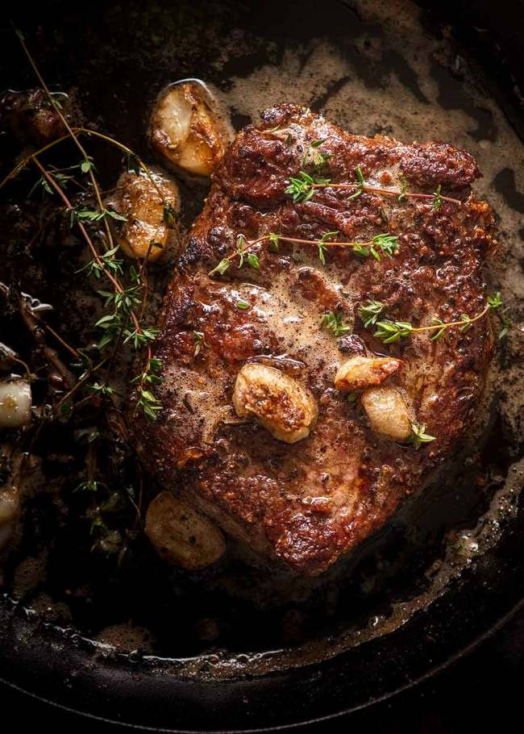

Great Steak Recipe

A technique to ensure a great tasting steak everytime.
Today’s recipe is more of a technique than a recipe – but it’s
one that all steak lovers should know because it’s easy, worthy
of using on high quality steaks and also a way to really elevate
economical steaks.
Ingredients:
- Thick cut steak
- Butter
- Garlic
- Fresh Thyme
Instructions
- Bring to room temp: Take the steak out of the fridge 30 minutes prior to bring to room temperature.
- Dry steaks: Pat dry with paper towels.
- Heat skillet: Heat oil in a heavy based skillet over high heat until it is very hot - you should see smoke!
- Season: Sprinkle each side of the steak generously with salt and pepper, then immediately place in the skillet.
- Sear Side 1: Cook for 2 - 2.5 minutes until you get a great crust, then turn.
- Garlic Butter: Leave for 1 minute, then push steaks to one side and toss in butter, garlic and thyme. BE CAREFUL - the thyme will sputter!
- Baste: As soon as the butter is melted, continuously spoon the butter over the steak until it's cooked to your liking - 2 minutes in total for the 2nd side for medium rare (52C/125F, chart below for other doneness temps)
- Basting also renders fat on the side of the steak – use tongs to sear the edges at the end if you want it browned more.
- Rest: Transfer steak to a plate and cover loosely with foil, rest for 5 to 10 minutes.
- Serve steak with a bit of the butter from the skillet drizzled on top. Pictured in post with Crispy Smashed Potatoes.